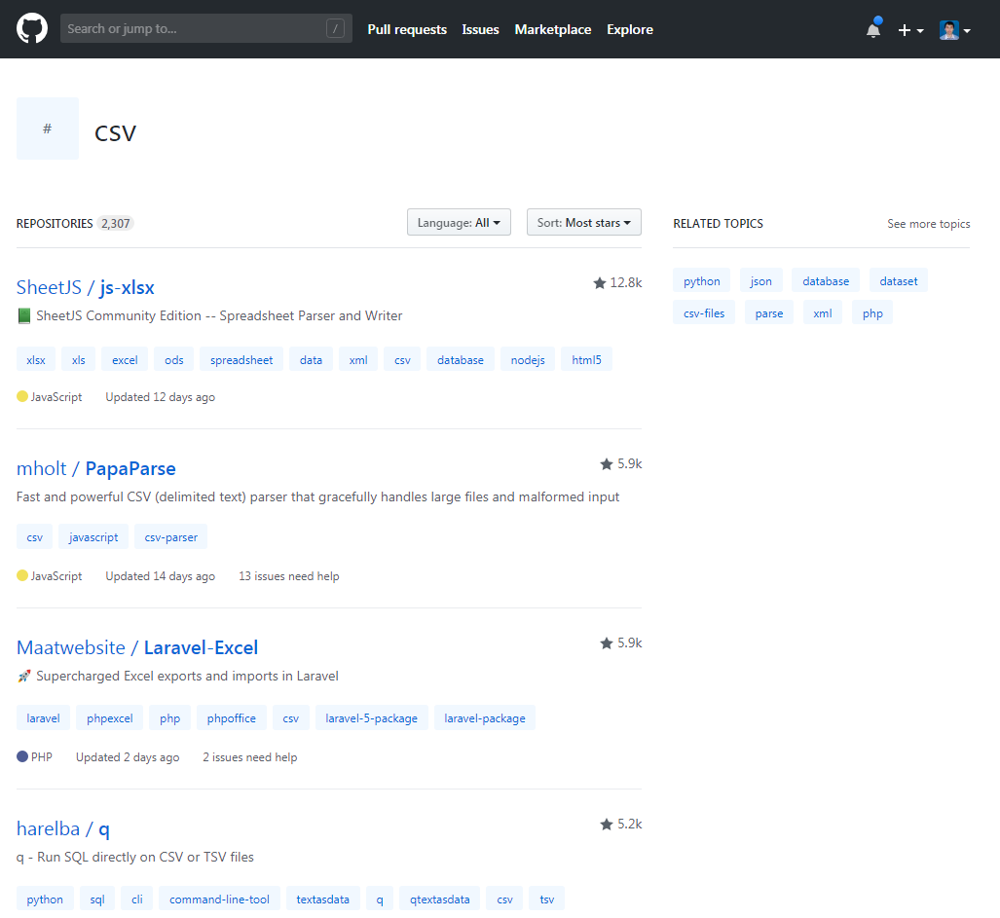

Theo tìm kiếm trên Google và thống kê ở Github.
PHP Excel

CSV
Tôi quyết định chọn thư viện Laravel-Excel:
https://laravel-excel.maatwebsite.nl/
https://github.com/Maatwebsite/Laravel-Excel
Một số tính năng vượt trội của Laravel Excel
Cài đặt với composer:
composer require maatwebsite/excel Sau khi cài đặt xong bạn mở file file config/app.php và
thêm đoạn code như dưới.
'providers' => [
....
Maatwebsite\Excel\ExcelServiceProvider::class,
],
'aliases' => [
....
'Excel' => Maatwebsite\Excel\Facades\Excel::class,
],
Public các thiết lập cấu hình:
php artisan vendor:publishThiết lập trên sẽ thêm file excel.php vào thư mực config.
Laravel Excel có thể import nhiều file, file xls, xlsx, CSV files, worksheets thành Laravel collections.
Excel::load('file.xls', function($reader) {
// reader methods
});
Excel::batch('folder', function($rows, $file) {
// Explain the reader how it should interpret each row,
// for every file inside the batch
$rows->each(function($row) {
// Example: dump the firstname
dd($row->firstname);
});
});
$files = [
'file1.xls',
'file2.xls'
];
Excel::batch($files, function($rows, $file) {
});
Excel::load('file.csv', function($file) {
// modify
})->export('csv');
Excel::load('file.csv', function($file) {
// modify stuff
})->convert('xls');
Code mẫu:
public function importExcel(Request $request) {
$request->validate([
'import_file' => 'required'
]);
$path = $request->file('import_file')->getRealPath();
$data = Excel::load($path)->get();
if ($data->count()) {
foreach ($data as $key => $value) {
$arr[] = ['title' => $value->title, 'description' => $value->description];
}
if(!empty($arr)){
Item::insert($arr);
}
}
return back()->with('success', 'Insert Record successfully.');
}
Laravel Excel có thể tạo file Excel hoặc CSV từ Eloquent models and PHP array.
Export to Excel 2003 (xls)
Excel::create('Filename', function($excel) {
})->export('xls');
// or
->download('xls');
Export to Excel2007 (xlsx)
->export('xlsx');
// or
->download('xlsx');
Export to CSV
->export('csv');
// or
->download('csv');
Store on server:
Excel::create('fileName', function($excel) {
// Set sheets
})->store('xls');
Creating a sheet:
Excel::create('Filename', function($excel) {
$excel->sheet('Sheetname', function($sheet) {
// Sheet manipulation
});
})->export('xls');
Code mẫu
public function downloadExcel($type) {
return Excel::create('itsolutionstuff_example', function($excel) {
$excel->sheet('mySheet', function($sheet) {
$data = Item::get()->toArray();
$sheet->fromArray($data);
});
})->download($type);
}
Bạn có thể sử dụng Laravel’s Blade để export file excel, chia sẽ một view, tải một view tới sheet hay tạo một bảng html bên trong view.
Excel::create('New file', function($excel) {
$excel->sheet('New sheet', function($sheet) {
$sheet->loadView('folder.view');
});
});
Excel::create('New file', function($excel) {
$excel->sheet('First sheet', function($sheet) {
$sheet->loadView('view_first');
});
$excel->sheet('Second sheet', function($sheet) {
$sheet->loadView('view_second');
});
});
Excel::shareView('folder.view')->create();
$sheet->loadView('view', ['key' => 'value']);
hoặc
// Using normal with()
$sheet->loadView('view')
->with('key', 'value');
// using dynamic with()
$sheet->loadView('view')
->withKey('value');
Trên đây là một số tính năng cơ bản của Larave Excel. Hy vọng bài viết này sẽ giúp các bạn nắm bắt được một phần nào về Laravel Excel.
Import 1 file:
Excel::load('file.xls', function($reader) {
// reader methods
});
CSV Settings cài đặt CSV options với các biến thuộc tính protected $delimiter,
$enclosure and $lineEnding
class UserListImport extends \Maatwebsite\Excel\Files\ExcelFile {
protected $delimiter = ',';
protected $enclosure = '"';
protected $lineEnding = '\r\n';
}
Chọn sheet thao tác
// 1 sheet
Excel::selectSheets('sheet1')->load();
// many sheets
Excel::selectSheets('sheet1', 'sheet2')->load();
// Chọn sheet theo indexindex
Excel::selectSheetsByIndex(0, 1)->load();
Lấy dữ liệu sau khi load file với hàm get()
Excel::load('file.xls', function($reader) {
// get title
$workbookTitle = $reader->getTitle();
foreach($reader as $sheet)
{
// get sheet title
$sheetTitle = $sheet->getTitle();
}
})->get();
Giới hạn đọc file
// Lấy số dòng
$reader->takeRows(10);
// or
$reader->limitRows(10);
// Skip dòng
$reader->skipRows(10);
// Lấy & giới hạn số cột
$reader->takeColumns(10);
// or
$reader->limitColumns(10);
Export 1 file đơn giản:
Excel::create('Filename', function($excel) {
// Set the title
$excel->setTitle('Our new awesome title');
// Chain the setters
$excel->setCreator('Maatwebsite')
->setCompany('Maatwebsite');
// Call them separately
$excel->setDescription('A demonstration to change the file properties');
});
Export và download file với export() or download():
// $ext = xls, xlsx, csv, pdf...
Excel::create('Filename', function($excel) {
})->export($ext);
// or
Excel::create('Filename', function($excel) {
})->download($ext);
Custom đường dẫn export file:
Excel::create('Filename', function($excel) {
// Set sheets
})->store($ext, storage_path('excel/exports'));
Export sử dụng blade view cho nhiều sheets
Excel::create('newfile.xls', function($excel) {
$excel->sheet('sheet 1', function($sheet) {
$sheet->loadView('view_first');
});
$excel->sheet('sheet 2', function($sheet) {
$sheet->loadView('view_second');
});
});
// Truyền biến ra blade view
// Cách 1:
$sheet->loadView('view', ['key' => 'value']);
// Cách 2:
$sheet->loadView('view')->with('key', 'value');
// Cách 3:
$sheet->loadView('view')->withKey('value');
Tạo file từ mảng:
Excel::create('Filename', function($excel) {
$excel->sheet('Sheetname', function($sheet) {
$sheet->fromArray(array(
array('data1', 'data2'),
array('data3', 'data4')
));
});
})->export($ext);
Styling sheet
// Font family
$sheet->setFontFamily('Comic Sans MS');
// Set font with ->setStyle()`
$sheet->setStyle(array(
'font' => array(
'name' => 'Calibri',
'size' => 12,
'bold' => true
)
$sheet->cell('A1', function($cell) {
// Set black background
$cells->setBackground('#000000');
// Set font
$cells->setFont([
'family' => 'Calibri',
'size' => '16',
'bold' => true
]);
// Set all borders (top, right, bottom, left)
$cells->setBorder('solid', 'none', 'none', 'solid');
});
));
<html>
<body>
<!-- Horizontal alignment/big title -->
<td align="right"><h1>Big title</h1></td>
<!-- Vertical alignment/bold -->
<td valign="middle"><b>Bold cell</b></td>
<!-- Rowspan/bold -->
<td rowspan="3"><strong>Bold cell</strong></td>
<!-- Colspan/italic -->
<td colspan="6"><i>Italic cell</i></td>
<!-- Width/image -->
<td width="100"><img src="img.jpg" /></td>
<!-- Height/black background -->
<td height="100" >Cell with height of 100</td>
// sử dụng tag style để css
<style>
tr td {
background-color: #ffffff;
}
tr > td {
border-bottom: 1px solid #000000;
}
</style>
</body>
</html>
Share view cho các sheets với hàm shareView()
Excel::shareView('folder.view')->create();